来源：https://xqulkwki4ye.feishu.cn/docx/IuHmdejdvoAmCcxL2GkcXRZIn3e
各位生财的圈友们，大家好！
今天主要是把我个人，在12月3号参加完生财在深圳的线下聚会活动后，跑通了的一个小项目，跟大家做个经验分享，同时，也算作为我个人的项目复盘。
废话不多说，直接开始我的自我介绍：
..........
【我的昵称】唐门三叔
【自我介绍】大家好，我是唐门三叔，招财方略互联网轻创业项目实操社群的创始人，虽有多年互联网从业经验，但唐门三叔这个私域IP，才刚刚度过一周岁的生日；2022年11月，我带着这个只有三个月大的IP，从江西只身奔赴深圳开始我的私域IP创业之路，到目前为止，私域IP粉在20万+，公众号和微信的私域用户在7W左右，前段时间刚刚上线了社群小程序招财方略，目前还在试运营当中。
【所属行业】互联网脑回流
【用户群体】国内25-50岁，想通过互联网利用业余时间，寻找副业变现收入的人群；
【经营产品】轻创业社群、自媒体GPT、自动裂变搞米系统（变现测试中）、TM企微单删软件等
【优势标签】搞钱、抗坑、起号快、胆大心细、民间三叔、知行合一
【目前资源】做IP快速起号的心得和经验，各种互联网资源、项目拆解与测试方法、资源整合术等
【所需资源】源源不断的流量
【生财视角】这哥们儿有点意思，欢迎来生财分享你的故事与知识。
【我的微信】Tmss7799
软件名称：TM企微单向好友批量删除软件
TM软件版本及相关套餐费用如下
| 版本 | 功能限制 | 使用时长 | 套餐费用 |
|---|---|---|---|
| TM试用版 | 免费删除10条 | 0元试用 | |
| TM年费版 | 无限制使用365天 | 99元/年 | |
| TM终身版 | 无限制永久使用 | 199元/终身 |
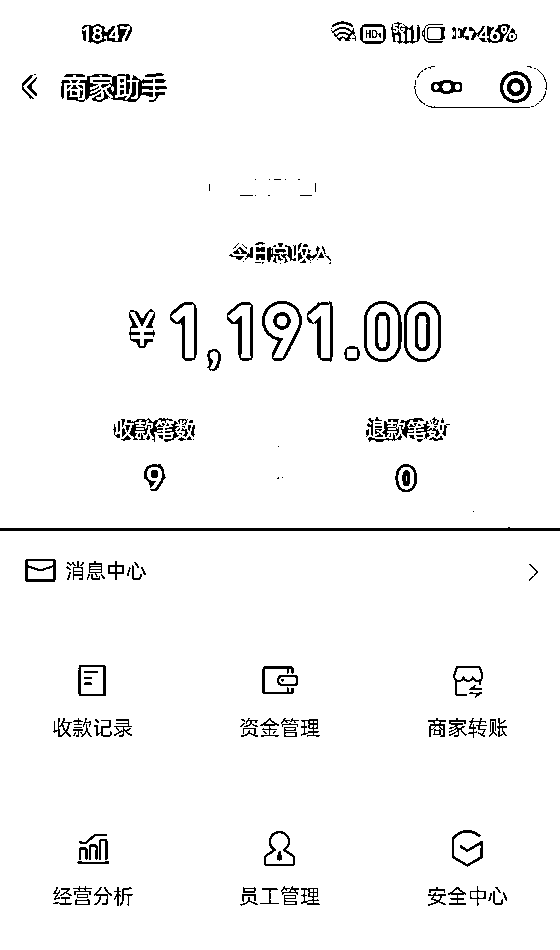
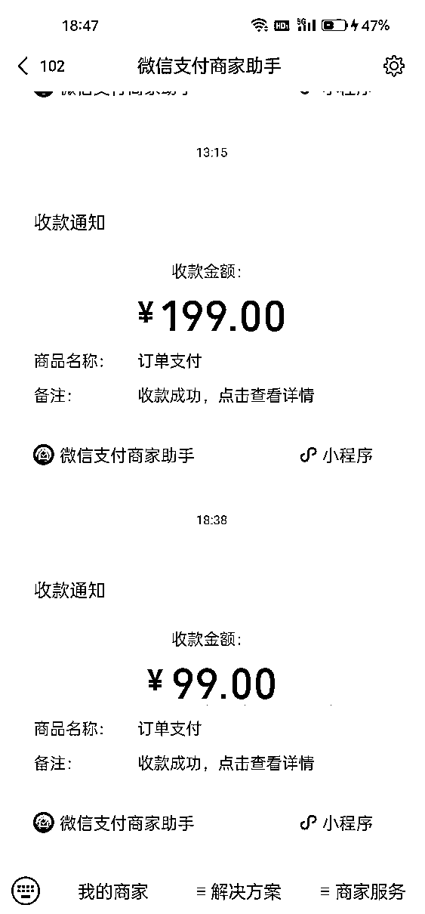
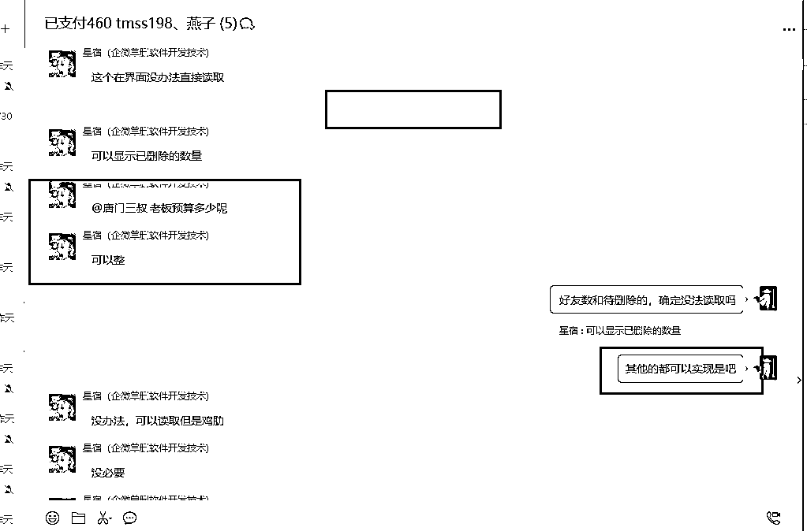
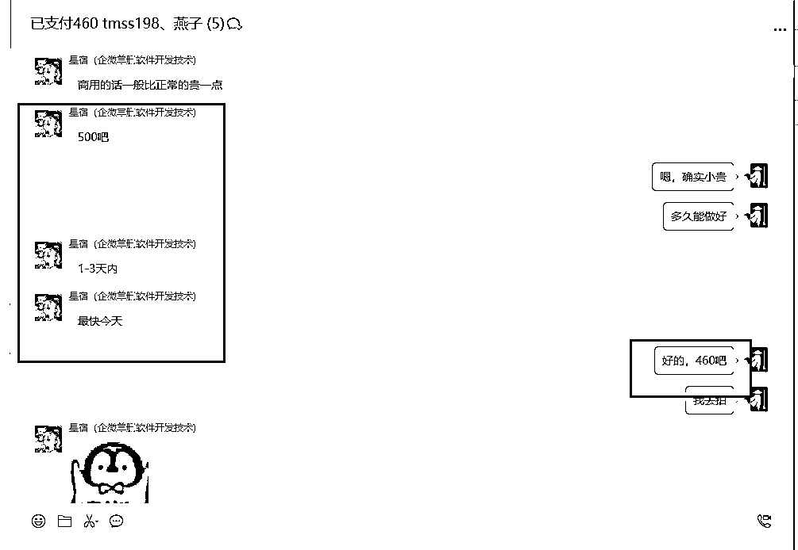
简述：
上面在我的个人介绍中有提到过，我是做私域的，所以，经常会通过企业微信群发一些活动的消息，久而久之，会引起一些不是那么精准的用户，把我的企业微信拉黑，删除，这样它就变成了我的单向好友。
其实单向好友也没啥关系，谁还没有拉黑过别人呢，对吧？
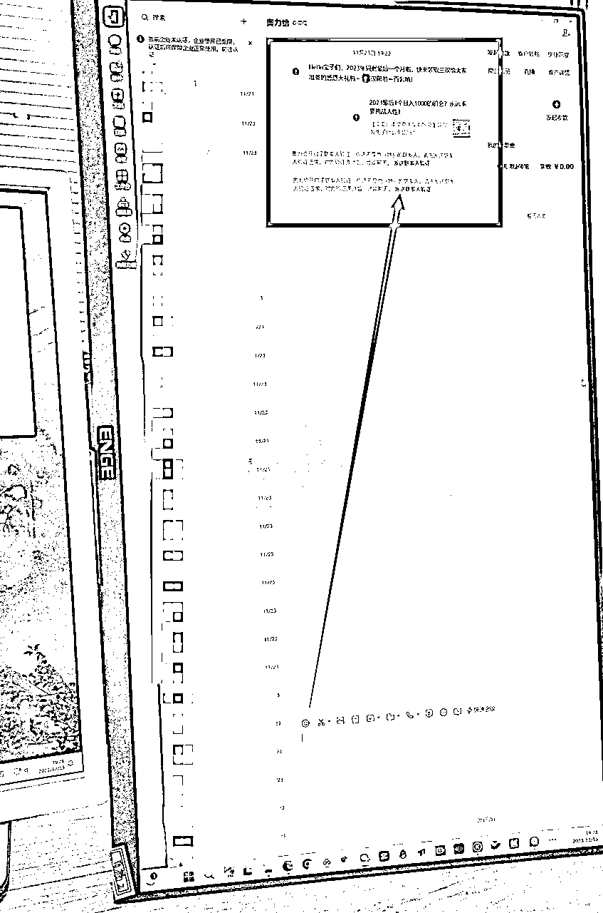
但是呢，自从腾讯开启对企业微信的外部联系人规模开始收费之后，这个单向好友就有关系了。
都跟钱挂上钩了，咋能没关系呢？
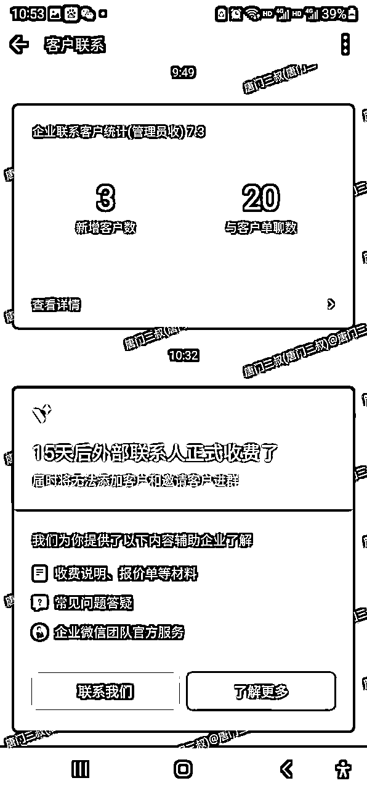
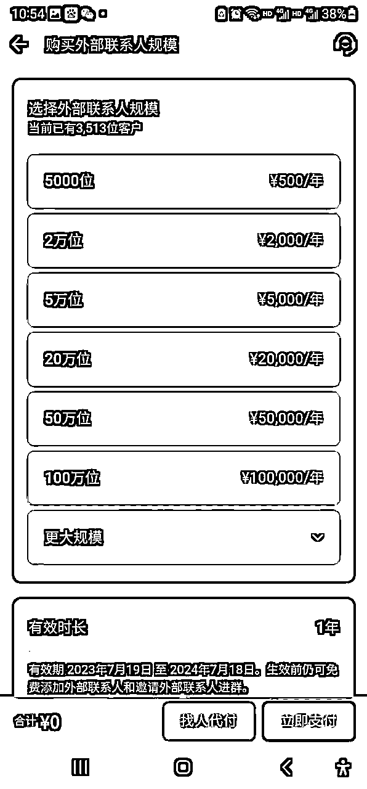
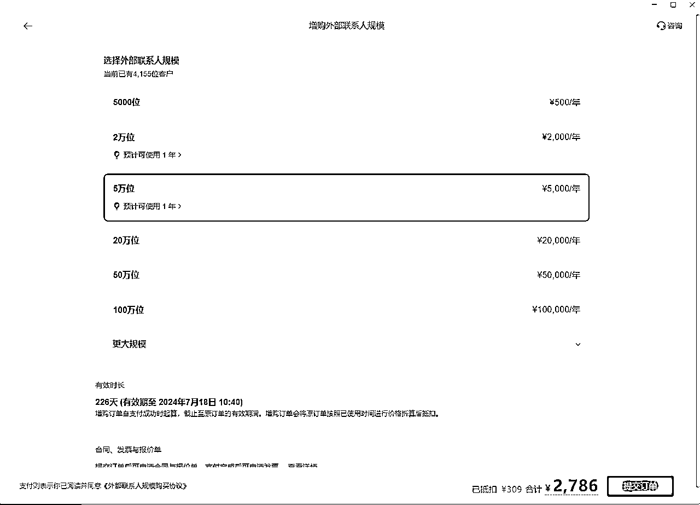
单从企业微信的外部联系人数来说，5000以内，一点问题都没有，但哪个做私域的，做产品，没个几万几十万的外部联系人呢，你看我下面这个帐号。
每个月的进的外部联系人也多，删除拉黑我的人也不少。如果不及时删除这些已经不是我们好友的外部联系人，腾讯一样是收你钱的，也就是说，这些客户虽然已经把你删除了，但是他还在烧着你口袋里的那白花花的银子。
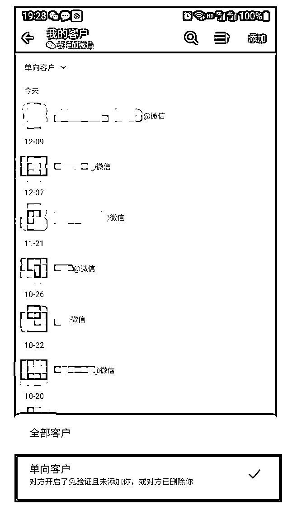
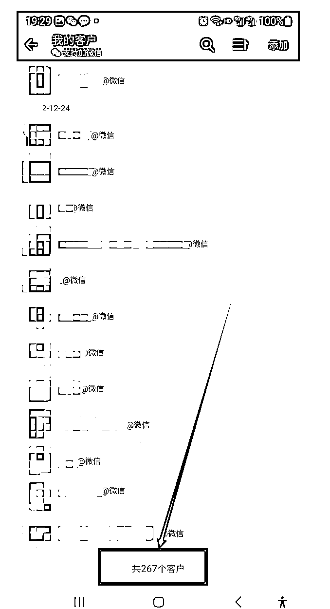
这事儿怎么能忍受呢？
不行！得盘它！！！
双十一活动之后，偶然间瞄了一眼企微的数据。
我一共有七个企业微信号，累计有2600多个单向好友，这还得了，得赶紧删除。
我和一个客服，两个人，玩命的删除，，
用了两个多小时的时间，也才删除了几百个，
我的天哪，手酸的喝水都发抖。
我的天哪，眼睛花的看门口保洁像车模，，关键是还眼泪汪汪。
我想这应该不是年纪的问题，确实是长时间保持了一个动作，盯着一个位置看，
反反复复，就形成了肌肉疲劳和眼睛的过度疲劳。。。
.........
不行，这样下去会累成那啥，咱一个互联网老人儿，咋能让这个能难住呢？
上工具吧！
淘宝、生财、拼多多、油管。。。。。。
翻遍了也没有找到此类的软件工具，，，，，
我的预算是：
如果能有这样的一个批量自动化的删除单向好友的工具，年费不超过1000，我就买！
事实上让我和我们很失望，不知道是大佬们看不上这块小小的需求，还是咋的？
在互联网上竟然找不到，这样一个工具。
.....
于是，我放弃了手动删除的想法，先弃之不顾！
主要是，不想因为一点小钱儿，把自己累到了，总感觉不值！
于是，这个症结，就卡在那里。
12月3号，应暖安邀请去西乡参加生财的线下演讲技能小聚，这应该是我第一次参加此类活动：
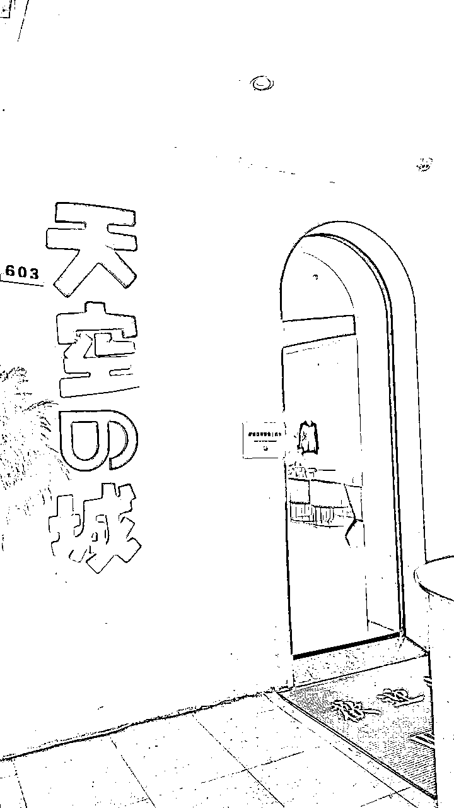
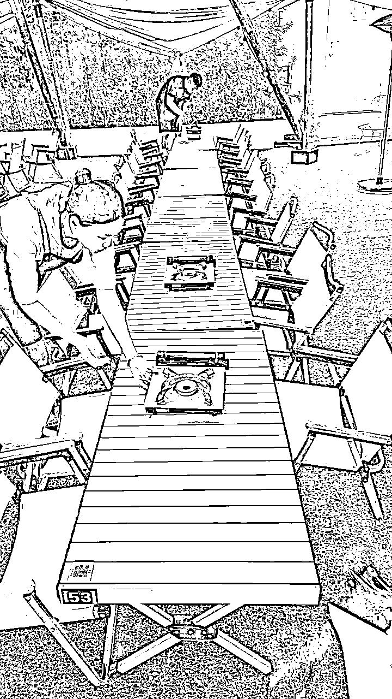
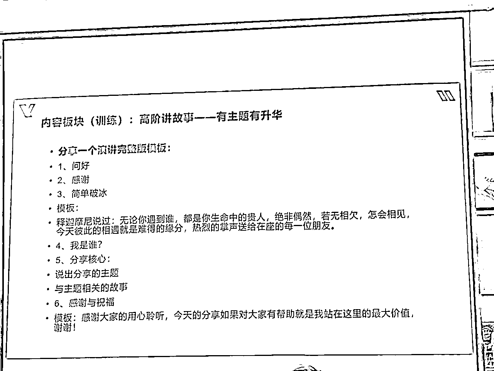
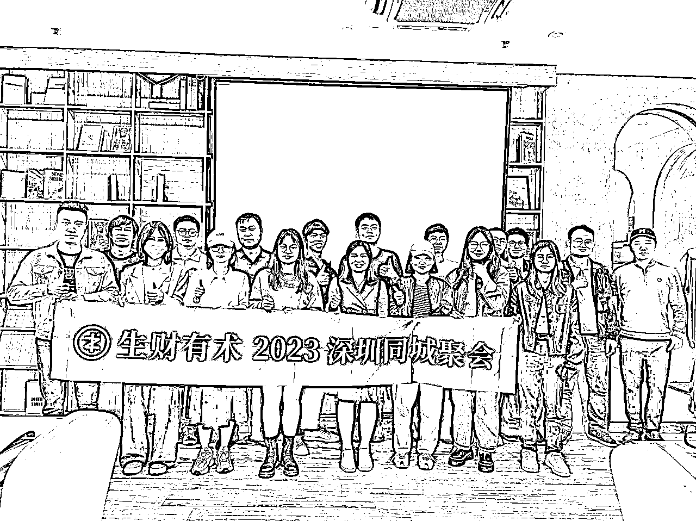
加入生财半年多，只出去约过两次小饭局，甚是遗憾。
聚会的地点在宝安区西乡桃源居，从我所在的龙岗坐地铁过去，需要倒三条地铁线，，
大大小小接近40个站点，单趟过去的时间，就要在两个小时以上。
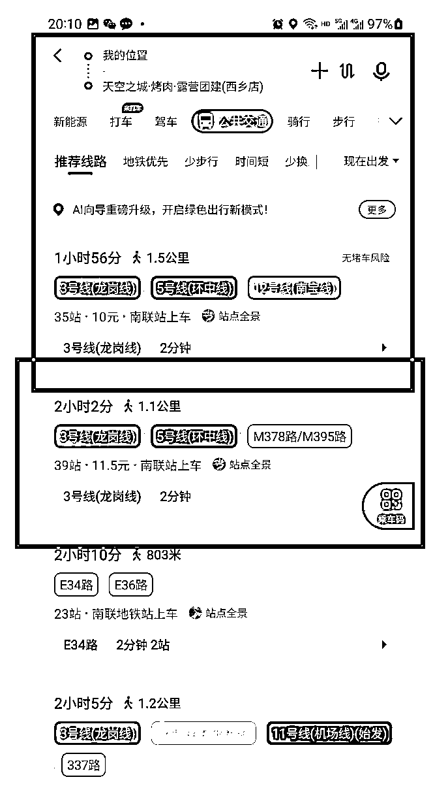
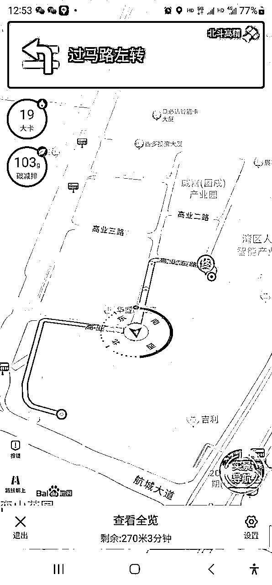
聚会过程和收获已发复盘帖，这里不做过多赘述。
只说一个与我们本次复盘笔记相关的话题。
在聚会期间，私下问了几个使用企业微信的小伙伴，均有此类需求。
特别是车夫子，一个十足的程序员，我跟他聊这个需求的时候，似乎有那么点火花的味道了。
因为他在晚餐席间聊到：
企业微信单向好友批量删除，这个功能在程序员的眼里，真的是微不足道的需求。
但，使用企业微信的人，又有几个程序员呢？
就拿我来说，以我的认知和能力，我就用代码搞不定。
我就只能用软件和工具，找软件找工具，没有找到，这个就是需求，
是的，很多时候，我们错失一些商机，不是因为没有发现。
而是因为高估了有这个需求痛点的用户群体的认知和能力。
就拿企业微信单向好友批量删除，这个功能来说，我在百度推广帐号中，添加关键词的时候，才发现。
比如：微信怎么删除好友？
比如：微信发红包最大的金额是多少？
..........
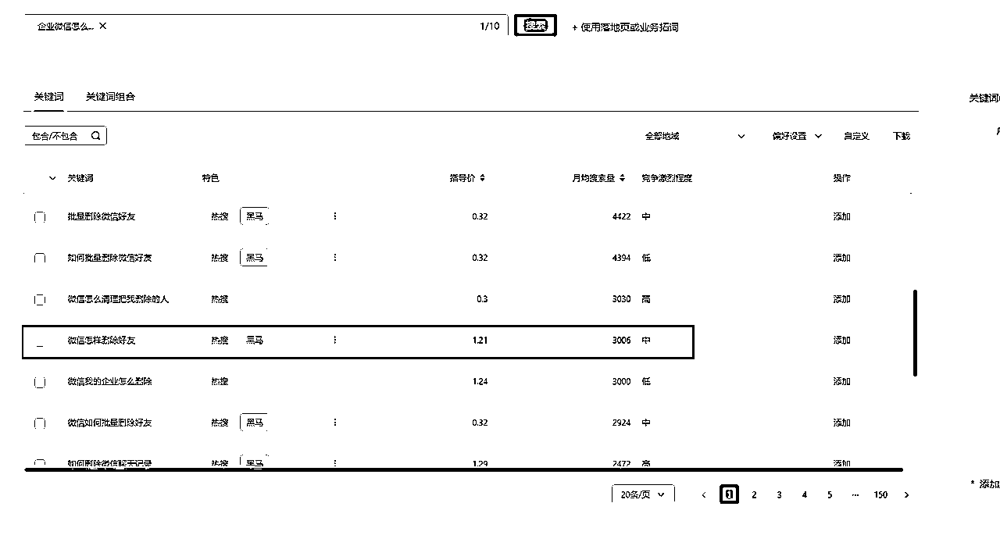
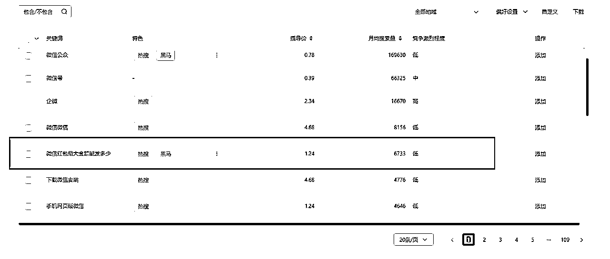
等等，这些问题，在我们的认知里，怎么也想不通，怎么会有人还不知道红包最多可以发200，
怎么还会有人不知道如何拉黑一个微信好友？而且月搜索量还挺大。....
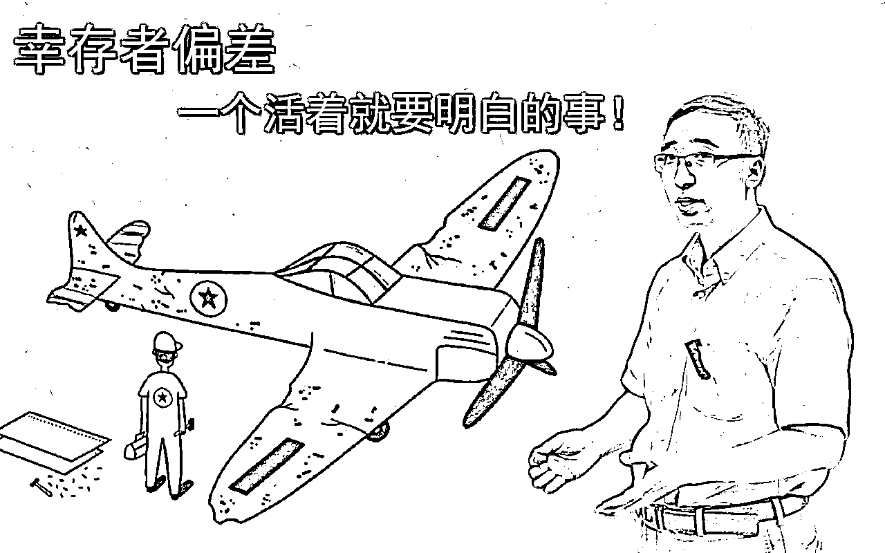
幸存者偏差，一个活着就该明白的事！
在几年前做交易员的时候，认识一个词叫做：幸存者偏差
现在做互联网私域了，又重新认识了一个词，叫做：认知偏差
此时，我也终于理解了，为什么在抖音上教别人如何坐飞机，如何坐高铁，都能火的一塌糊涂了。
..........
去的时候，在地铁上站了一路，周末嘛，深圳人多。
可我依然，精神抖擞，因为要去认识很多新的小伙伴了，有些许的兴奋。
回来的时候，已是深夜，加之中午没有午休，身体有些疲惫，人依然很多，挤来挤去。
但我还是靠在过道的扶手上迷糊了一会儿。
期间，迷迷糊糊的听到一对情侣在讲今天加班的事儿。
大体的意思是：
双12马上到了，老板要让他清理一下企微中的单向好友，有四千多个，这个周末得删完，4号开始要发直播活动通知给企微中的客户。
手动删的他整个人都快崩溃了，删了一整天，还没有搞定，明天上班估计会挨骂之类的话。
...........
我浑身打了一个冷战，顿时清醒了过来。
就随口和那哥们儿搭了几句话，但从他的反馈来看。
他作为员工，还是很愿意为这样的工具付费的，但老板给不给报销，就不清楚了。
......
好吧~~
这个工具，我开发了！
虽然我不会写代码，但是我会付费~~
是的，专业的事儿，交给专业的人去搞定，就好~
在淘宝找了一家开发脚本工具的商家，10分钟搞定需求，460元搞定一款工具。
以下是整个需求，从描述到开发完善的全部过程，有这方面需求的小伙伴可以认真看看。
拿到软件之后，接下来肯定是自己用了，但如何让它产生更大的价值呢？
对，卖给需要它的人！
12月5号，当晚就联系了米斗（生财圈友，本次线下聚会认识。）帮我设计一个推广页面。
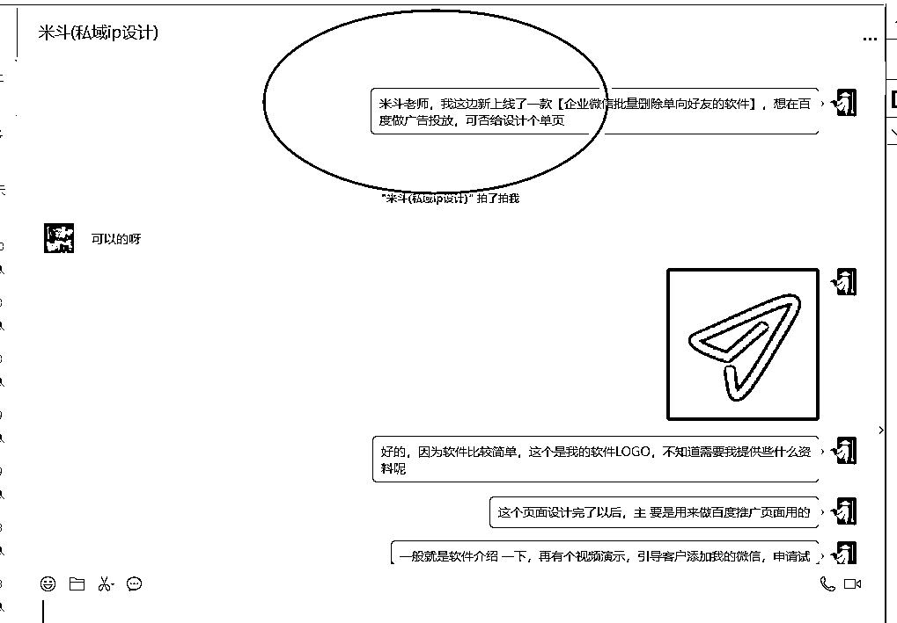
整理出软件的页面设计需求这后，就赶紧发给了米斗老师做设计思路分析。
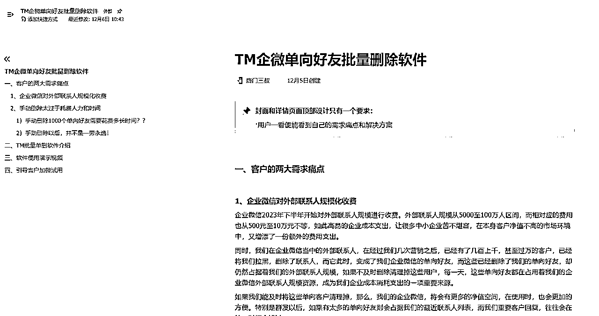
米斗老师，第二天就拉了一个四人的设计小组，共同讨论这个页面的设计，非常给力~
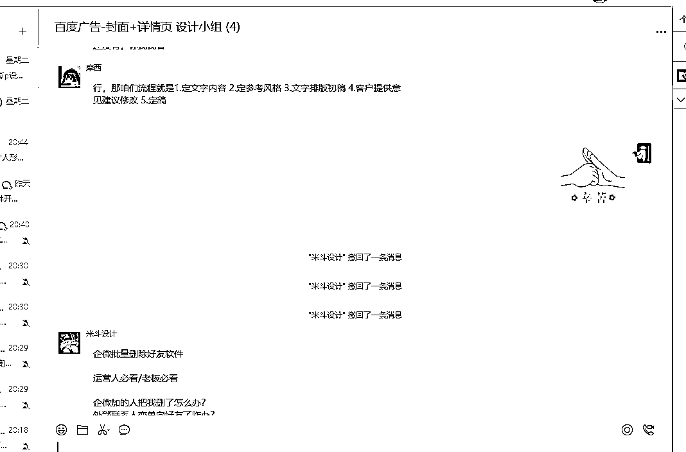
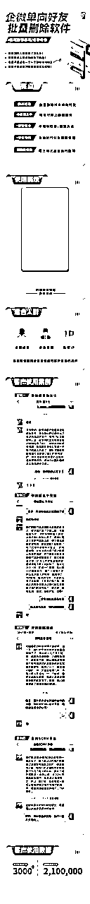
漂亮，大气，实用，转化好！！！
百度竞价开户：找的我社群里的一个兄弟，他给推荐的，1778开2400的帐户。
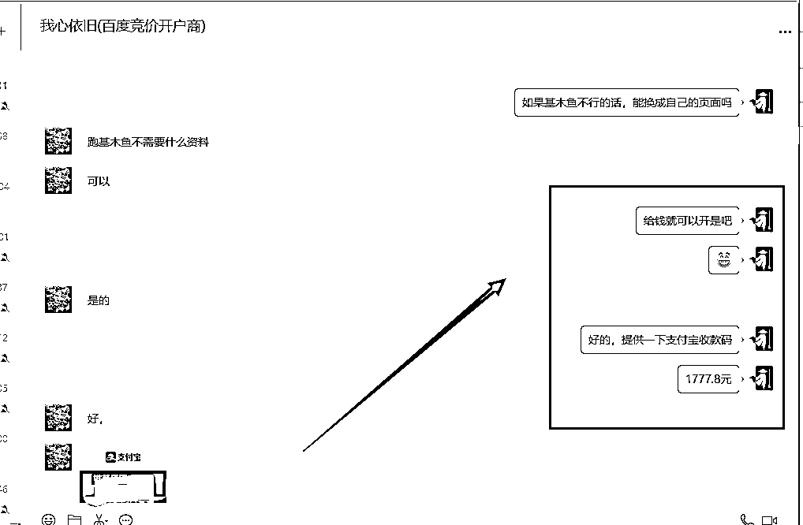
竞价页面：用米斗老师的设计图，直接在百度推广的基木鱼里生成。
好友评论，百度过不审，就拿掉了。【这个小坑，大家可以避一避】
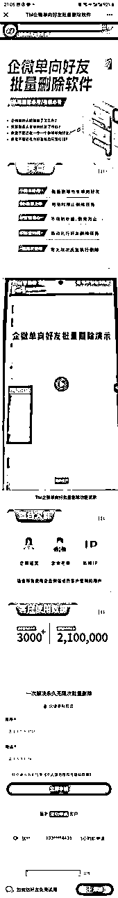
定价策略：
源于在参加完12月3号生财线下聚会，回程地铁上与同路人的交流。
毕竟售价不高，最主要的是我的成本不高。
所以，很多客户就算老板不给自己报销，一两百块的成本对于他来说，也是可以承担的。
就这样，我的需求痛点就 这样变成了一款实用的，能解决用户痛点的软件，或产品，或能变现的产品。
因为是需求痛点产品，所以，，我投放的关键词走的是转化目标，和精准关键词投放。
下图是刚上线时的截图：
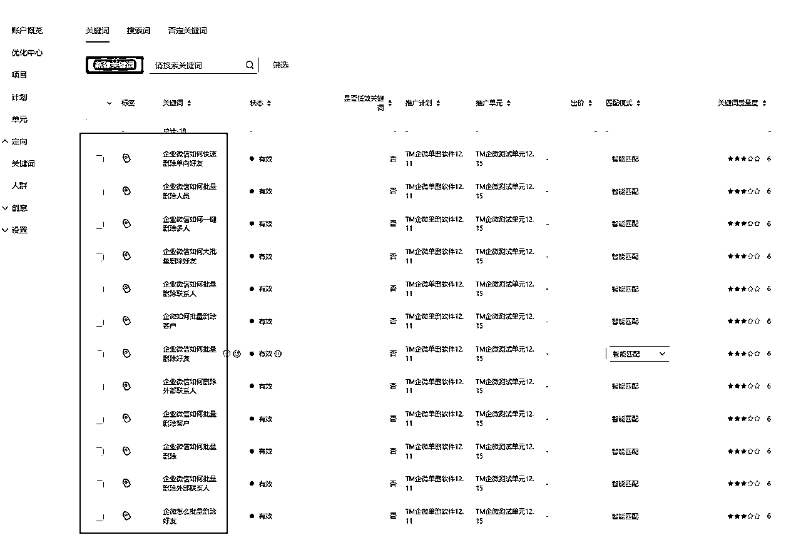
有需求的客户，通过我的推广页面，不断的添加到我的企业微信中，来进行试用。
试用满意后，目前除了个别不会设置权限的用户之外，付费转化率已经在60%左右了。
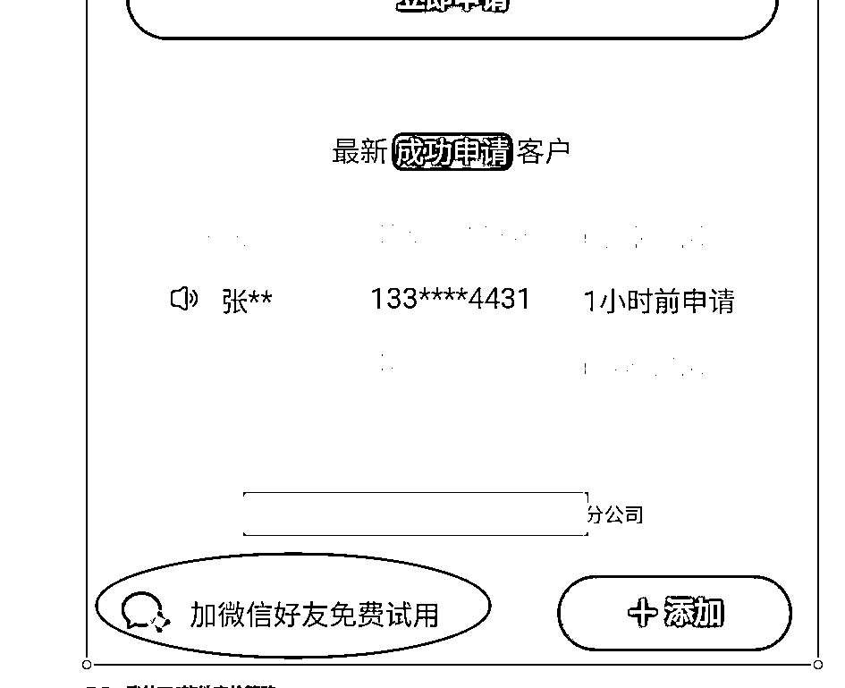
有了放量，所以，才有了开篇的日收入破1000元的收获。
在生财有术半年，每天必做的事情，就是看风向标。
在生财有术半年，最后悔的事情，外出参与活动太少了。
在生财有术半年，第一次航海报了14个航海计划，不为挣钱，只为提升认知。
在生财有术半年，认识到每个老板，都对搞钱有着极其强烈的欲望。
.....
总结一下：
此次项目从0-1的实操与变现，贵在执行和思考两个方面。
所以，做项目，做这个项目和做任何一个项目都有着共同之处。
就好比，生财是一座城堡。
我们站在远处眺望，始终不敢迈过脚下的深渊！
殊不知，再大的金矿，藏宝再多的城堡，也需要我们亲自去搞一搞！
如果只看，不做，你永远都是站在门外面叹息最厉害的那一个！
好吧， 知行合一
送给生财的各位老板和圈友~
共勉~~
我的生财分享处女帖：
辛苦了~
感谢你一路看到这个地方儿，唐门三叔有点坏的好可爱，哈。。。。
是的，这个可以是我在生财的处女分享帖，
那么，我的这款软件，就作为见面礼，送给各位圈友们免费使用啦~~
虽不是什么贵重的礼物，但希望能帮上真正有这个需求的圈友，解决手麻烦眼花的痛点【偷笑表情】
当我们的企业微信单向好友，有几百个或几千上万个时，你会发现，你用手去一个一个删除，会搞的你筋疲力尽，眼花缭乱，在删除的过程中，整个人都被搞的快崩溃了，双手发酸，两眼冒光，大脑里有10万个为什么....
假如，我们的单向好友，有1000个，
假如，我们手动删除的时间是，每5秒删除一个；
那么1000个删除就是5000秒，约等于83个小时，
而且这还是你83个小时，不能停，不能慢，不能休息的情况下
试想，怎么可能呢，当我们手动删除几十个之后，眼睛，手和大脑三者之间的协调会出现明显的延迟。
所以，没有150个小时，你是删除不完的。
而且，我们还不能天天不工作，就在那里删除这个单向好友。
每天我们就专门加班拿出5个小时来删除，这1000个单向好友，
那么，你也需要30天以上的时间，才能完全将他们删除。
当我们费尽九牛二虎之力，花费了一个月的时间，把这些单向好友全部删除后，
我们开始了新一轮的活动，当群发时，又发现我们的企业微信中，产生了大量的单向好友。
好吧~
我们又要开始新一轮手动删除，这些把我们拉黑或删除的单向好友了.....
总之，手动删除企微单向好友，太过于耗费人力和时间，能把人搞晕逼疯！
那有没有一款工具，可以24小时不停歇的帮我们批量自动的删除，这些单向好友呢？
鲁迅曾在散文《故乡》中说道：世上本没有路，走的人多了，也便成了路！
是的，我就是这条路上万千人中的一个。
在付费使用了企业微信的外部联系人规模以后，每天源源不断的流量涌进我们的私域流量池，但我们会经常在私域中针对营销活动，给所有或特定的客户群体群发活动消息，当群发一波下来，才发现，有大量的意向客户已经删除了我们的企业微信，当时我就安排了客服去删除这些单向客户，可是一天下来，也就删除了几十个就烦透了。
在找遍了整个互联网之后，也没有发现简单好用的工具，于是我们自己开发了一款《TM企微单向好友批量删除软件》，下面我将向大家简单介绍一下这款简洁好用的工具，都有哪些功能：
TM企微单向好友批量删除软件，是一款精美小巧的办公实用性工具，它可以帮助你将企业微信中，所有已经删除或拉黑你的单向好友，自动的批量的全部删除，最大化的释放企业微信外部联系人的付费规模。
软件功能亮点：
适合什么样的人群使用：
1、适合已经向企微官方购买了外部联系人规模的用户
2、适合小于5000免费外部联系人规模的用户使用
3、适合所有使用企业微信进行外部联系人营销的用户
软件下载链接地址：
https://wwow.lanzouq.com/i0IKW1humkwd
关于TM软件的安装说明：
非常感谢使用TM企微单向好友批量删除软件，由于官方的种种限制，我们并未将这款软件上架到各大应用商店，而是提供了apk的安装包，目前也仅支持在安卓手机上使用，如您是苹果手机用户，建议下载安装到另一部安卓手机上使用。
1）软件仅支持最新版的企业微信
2）软件仅支持所有安卓机型，不支持苹果机
3）软件使用时，请勿进行其他操作
4）下载好软件以后，长按软件开启以下权限：
5）电脑使用也可以，但需要安装模拟器
模拟器推荐使用雷电
https://www.ldmnq.com/?n=6000
最后，
祝生财的各位圈友，
在新的一年里，诸事顺利，数钱数到手抽筋儿~~
唐门三叔敬上
2023年12月15日
End